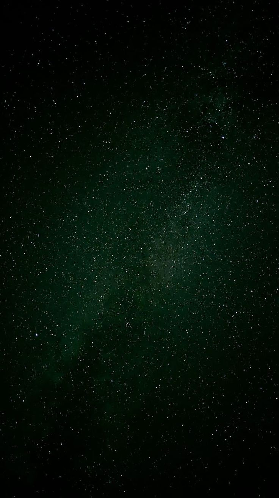

Lu & Clau — 27 anos
Bodas de Crisoprário
Convidamos você para celebrar mais um momento especial de muita história e amor.
Nesta data especial, vamos comemorar o amor, a união e a família construída com tanto carinho.
Sua presença tornará esse momento ainda mais especial.
fogoss